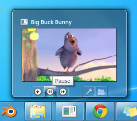

ThumbnailToolBar QML Type
Allows manipulating the window's thumbnail toolbar. More...
| Import Statement: | import QtWinExtras 1.13 |
| Since: | QtWinExtras 1.0 |
Properties
- iconicLivePreviewSource : url
- iconicNotificationsEnabled : bool
- iconicThumbnailSource : url
Signals
Detailed Description
This class allows an application to embed a toolbar in the thumbnail of a window, which is shown when hovering over its taskbar icon. It provides quick access to the window's commands without requiring the user to restore or activate the window.

Example
Window { ThumbnailToolBar { ThumbnailToolButton { iconSource: "qrc:///player_rew.png"; tooltip: "Rewind"; onClicked: player.rewind() } ThumbnailToolButton { iconSource: "qrc:///player_pause.png"; tooltip: "Pause"; onClicked: player.togglePlay() } ThumbnailToolButton { iconSource: "qrc:///player_fwd.png"; tooltip: "Forward"; onClicked: player.forward() } ThumbnailToolButton { interactive: false; flat: true } ThumbnailToolButton { iconSource: "qrc:///configure.png"; tooltip: "Settings"; onClicked: settingsWindow.show() } ThumbnailToolButton { iconSource: "qrc:///document_open_folder.png"; tooltip: "Open"; onClicked: player.open() } } }
Property Documentation
The pixmap for use as a live (peek) preview when tabbing into the application.
This property was introduced in Qt 5.4.
This property holds whether the signals iconicThumbnailRequested() or iconicLivePreviewRequested() will be emitted.
This property was introduced in Qt 5.4.
The pixmap for use as a thumbnail representation
This property was introduced in Qt 5.4.
Signal Documentation
This signal is emitted when the operating system requests a new iconic live preview pixmap, typically when the user ALT-tabs to the application.
This signal was introduced in Qt 5.4.
This signal is emitted when the operating system requests a new iconic thumbnail pixmap, typically when the thumbnail is shown.
This signal was introduced in Qt 5.4.